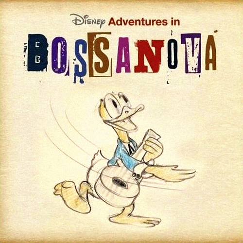
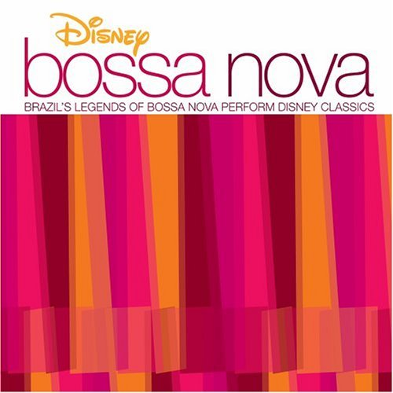
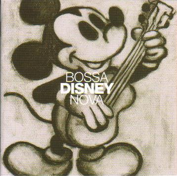
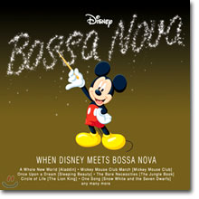
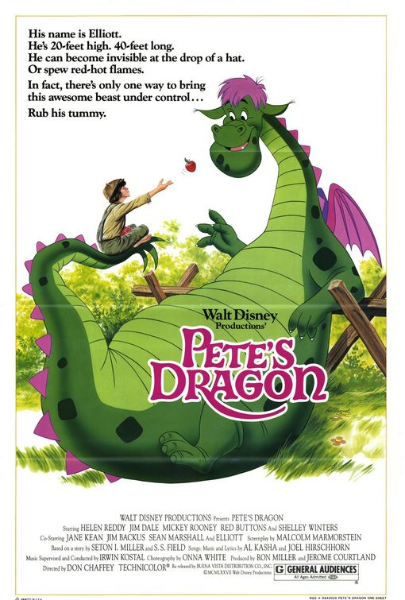

POSTS
NÃO É FÁCIL by Marcos Valle & Patrícia Alví - 누군가와 꿈을 함께한다는 것은 쉽지 않지. 하지만...
오늘도 살아남아 음악을 듣습니다.
누군가와 꿈을 함께한다는 것은 쉽지 않지.
하지만 점점 쉬워질거야.
그와 친구가 된다면 말이지
NÃO É FÁCIL 은 2006년 일본에서 기획,발매된 Bossa Disney Nova 란 앨범에 수록된 곡입니다.




( http://skyapplebug.tistory.com/292 에 전곡듣기가 있네요!)
Marcos Valle, Miucha, Carlos Lyra, Joao Donato 등 유명한 브라질 본고장 뮤지션들이 참가한 제대로 된 기획앨범으로 “Bossa N’ 어쩌구” 시리즈 같은 여타 리메이크 편집 앨범과는 비교가 안된는 진국입니다.
(NÃO É FÁCIL - Marcos Valle & Patrícia Alví)
NÃO É FÁCIL 원곡은 Pete’s Dragon (피터의 용) 에 수록된 It’s Not Easy 입니다.

(원곡:포루투갈어버전)
(원곡:영어버전)
< Nao E Facil >
De cara parece um camelo
O pescoco e de crocodilo
Tem mais, e um peixe que mama
E eu gosto dele assim
E nao facil
Gostar tanto de alguem
Nao e facil
Ser amado tambem
Eu gosto dele, e ele
Ele tambem gosta sim
E nao facil
De cara parece um camelo
O pescoco e de crocodilo
E orelhas de vaca
Assim sao nossos amigos
Sao como os outros nao sao
Nao facil
Gostar tanto de alguem
Nao e facil
Ser amado tambem
Isto e um tesouro
E ouro
Que voce tem que guardar
E tao facil
Esta vida e tao gostosa
Quando se ama alguem
Alguem que goste da gente
Que pense na gente
Que brinque com a gente
Nao facil
Viver sem ter ninguem
E tao facil
Quando se tem alguem
E coisa rara, cara
E eu sou feliz por que
Agora eu tenho mais alguem
Logo se ve, que e voce
E eu tambem
E e tao facil.
< It’s Not Easy >
Pete:
He has the head of a camel,
the neck of a crocodile
Nora:
It sounds rather strange
Pete:
He’s both a fish and a mammal
And I hope he’ll never change
‘Cause it’s not easy
To find someone who cares
Nora:
It’s not easy to find magic in pairs
Pete:
I’m glad I found him
I love him, I won’t let him get away
‘Cause it’s not easy.
Nora:
You say the head of a camel
The neck of a crocodile
Pete: And the ears of a cow!
Nora:
It’s clear that friends can be different
Yes, I understand you now
Both:
It’s not easy to find someone who cares
It’s not easy to find magic in pairs
Nora:
Now that you have him, hold him
Treasure him from day to day.
It’s so easy.
Nora:
Life is lollipops and raindrops with the one you love
Someone you can always be with
Argue and agree with
Pete:
Climb the highest tree with.
Both:
It’s not easy to share somebody’s dream
It gets easy
When you work as a team
Nora:
You’ve got to tend it, fan it
Pete:
That’s what I plan to do.
Oh, I had one friend by my side….
Now I have two…
Him and you…
Nora: Him and me…
Both: And it’s so easy.